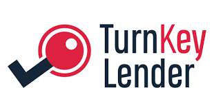
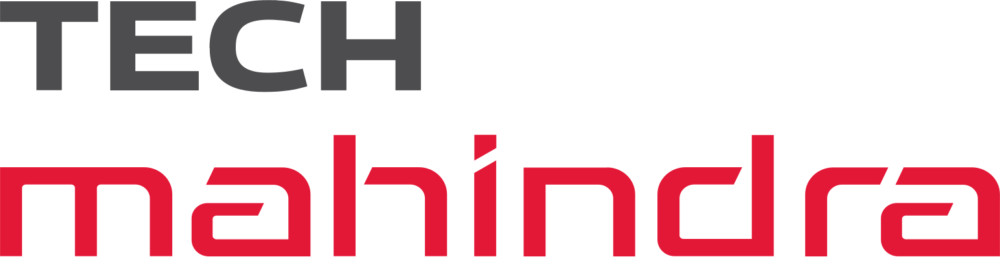
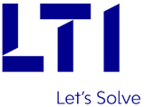

Sourish Chakraborty
AI Engineering & Modern Data Platforms | LLM Integration | ML Ops | AI Infrastructure | Data Engineering | Infra As Code | Build Automation | SRE | DevOps Expert | Platform Engineering | Clean Code | AWS | Kubernetes | Cloud-native Architecture & Microservices | Fullstack Development
📍 Kuala Lumpur, Malaysia
Professional Summary
Hi, I’m Sourish, passionate about innovation and technology. My journey is about building modern software platforms and AI systems for the future. An expert in AI Engineering, DevOps tools, and ML Operations with solid knowledge of site reliability engineering. I am a Clean Code enthusiast and have a proven track record of DevOps, infrastructure automation, and AI solution architecture. Specialized in LLM integration, ML Ops infrastructure, and building scalable AI pipelines. A champion in system/platform migration projects, from legacy platforms to cutting-edge cloud technologies and AI-ready systems. Being an avid learner in emerging AI technologies, always a self-starter with new technology domains, and capable of providing high value through innovative AI-driven solutions. A Skilled communicator with excellent agile leadership strengths to achieve deliverables on time; able to direct multiple tasks and master innovative software, AI tools, and technologies. An inspirational team player and supporter of constructive teamwork.
Core Competencies
DevOps & Platform Engineering
CI/CD, Infrastructure as Code, DevSecOps, build automation, platform migration.
Site Reliability Engineering
Observability, monitoring, incident response, resilience and self-healing systems.
Cloud & Cloud-Native Architecture
AWS, Azure, Kubernetes, microservices, scalable data platforms.
Agile & Delivery
Scrum, SAFe, agile leadership, continuous delivery practices.
Experience



- Senior Application Architect, System Consultant, Software Engineer.
- Large-scale GIS, enterprise platforms, and system integration.
Featured Blogs
Loading latest articles...
Career Highlights
- Increased high-frequency data processing capacity by 90%+.
- Led multiple legacy-to-cloud platform migrations.
- Designed and delivered CI/CD automation across cloud and on-prem environments.
- Built Kubernetes platforms supporting mission-critical microservices.
- Created zero-maintenance automated workflows using IaC.
Certifications
Tools & Technologies
Cloud
AWS, Azure, Kubernetes
IaC
Terraform, CloudFormation, Ansible, Packer
CI/CD
Azure DevOps, GitHub Actions, AWS CodePipeline
Observability
Prometheus, Grafana, ELK, Zabbix
Languages
Go, Python, Bash, PowerShell
Languages
- English – Full Professional
- Bengali – Native / Bilingual
- Assamese – Native / Bilingual
- Hindi – Full Professional
Let’s Connect
Interested in cloud platforms, DevOps, or scalable data systems? Let’s talk.